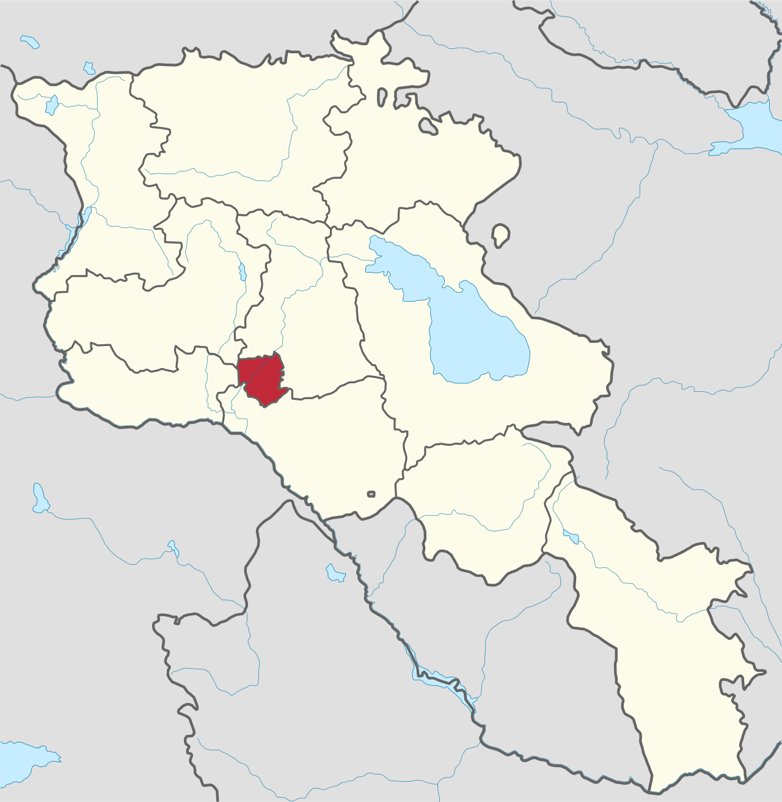

Media files, Videos, bilder, audio
Landscape and Monasteries in Armenia
 Khor Virap Monastery
Khor Virap Monastery
 Tatev Monastery
Tatev Monastery
Galleri om Armenisk kultur
Källa Wikimedia commonsCaptain Spilet
CC BY 3.0
Armenian Cuisine
källa Youtube


Armenian Folk music
Källa Se Youtube
Armenian music, duduk